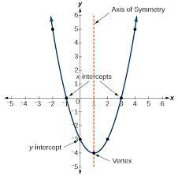
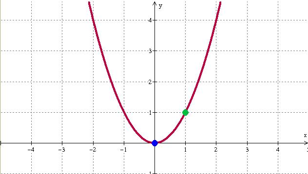
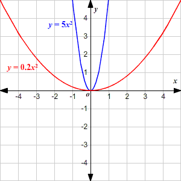

3.1 - What is a parabola?
Before we learn what parabolas are and how to graph them, we must understand how to pronounce the name. A lot of math teachers would often pronounce the name wrong which would typically result in all their students pronouncing the name wrong as well. This would be a problem since no mathematicians would be able to understand each other if no one can pronounce a concept the same way.
A parabola is a symmetrical curved line formed from a single point, almost like a U-Shaped curve that can be calculated through a quadratic equation.
This is a banana which can be a parabola
The McDonald's Logo has two parabolas
Another example of a parabola that can be found in real life
3.2 - Graphing a Parabola with y = x2 or y = x2 + k
Here is a quick diagram of the parts of a parabola so we can understand all the vocabulary before graphing one.

Vertex - The highest/lowest point of the parabola.
Axis of Symmetry - An imaginary line where the graph is cut in half and the points/lines are a reflection of each other.
y/x intercepts - Points where it intercepts the axis of the graph
Quadratic Functions are what we are going to use when graphing parabolas. Examples can be y = x2 or y = x2 + k. There are actually many methods we can use to graph a parabola but the most popular method is to create a data table and utilise the quadratic function to find (x, y) values.
y = x2 + k is essentially the same equation except that we are given the k value.
3.3 - Graphing Parabolas with y = ax2 + k
y = ax2 + k is similar to the previous quadratic functions that we have dealt with before but this time, we have added the a value to the equation. With this new value, we are able to control the intensity of the parabola.
So for example we may have this parabola with the a value as 1.
As we changes the a value to a larger value than one, the parabola becomes more narrow while if we change the a value to a smaller number, the parabola becomes wider.
3.4 - Graphing Parabolas with y = a(x - h)2
y = a(x - h)2 is a quadratic equation that gives you the x component of the vertex. The h is directly taken from the vertex but however, in the equation, it is negative so we would have to convert the equation's h value to the opposite sign before using it to plot into our graphs.
3.5 - Graphing Parabolas with y = a(x - h)2 + k
y = a(x - h)2 + k is a quadratic function that is ideal for graphing parabolas as it completely informs us of the vertex and allows us to find any point within the parabola. This is also what we call general form as it is a equation built for creating parabolas and graphing quadratic functions.
Practice Questions
To practice graphing parabolas, a lot of practice is needed to ensure that there are no minor mistakes. The buttom on the bottom will provide a worksheet but you will need to either graph on your own paper while using the worksheet as a reference or you can use an online software like desmos to graph it. If you are using desmos, please do not enter the quadratic function. Instead, you will be have to calculate the points (x, y) yourself and plug those in.